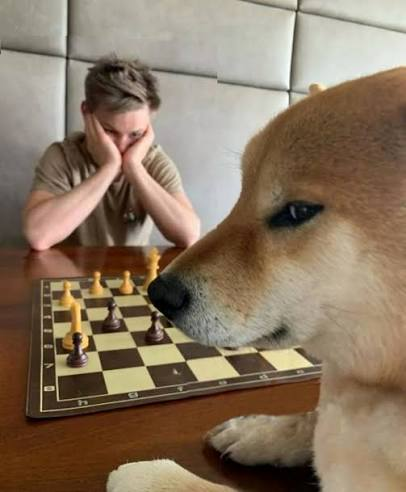
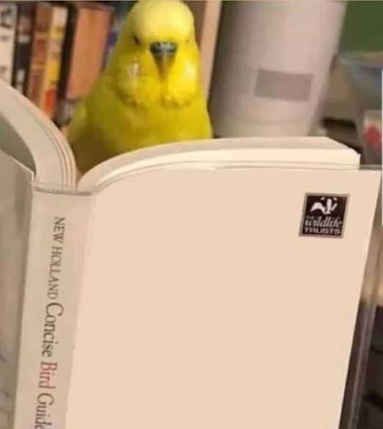
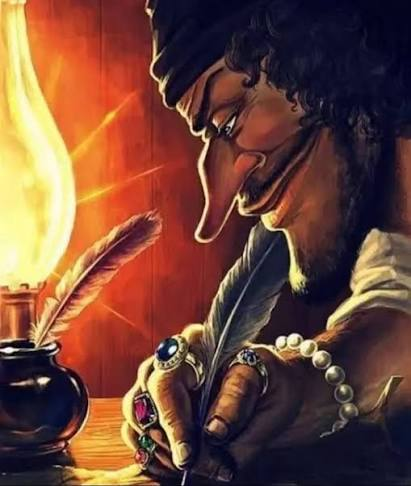
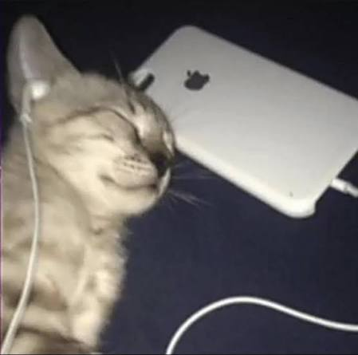

Soy un estudiante de Ingeniería de Sistemas. Entré a la carrera porque era lo que mejor se acoplaba a mis gustos; pero me terminó gustando. Esto es un portafolio de prueba.
El ajedrez no ha sido una pieza fundamental en mi vida, pero sí define claramente qué clase de persona soy. No soy muy bueno en el ajedrez, pero me gusta jugarlo y aprenderlo. Mi apertura favorita son los movimientos e4, y d4 como defensa.

La lectura apareció tarde en mi vida, pero considero que fue una parte fundamental de mi vida. Empecé a leer hace unos dos años, pero en esos dos años leí varias obras que me marcaron. Leo literatura principalmente y mis autores favoritos son: Fiódor Dostoievski y Cervantes

La escritura también fue algo que apareció muy tarde en mi vida. Siempre tuve ganas de escribir historias. En la escuela no me aburría escribir las historias que pedían de clase. Luego me tomé la escritura un poco más en serio.

La música, como casi para todas las personas, es importante para pasar ratos en los que no hago nada. Mis géneros favoritos son el rock latino, soundtracks de videojuegos y el metal. Mis artistas favoritos son Cerati, Spinetta, SOAD y Toby Fox.
